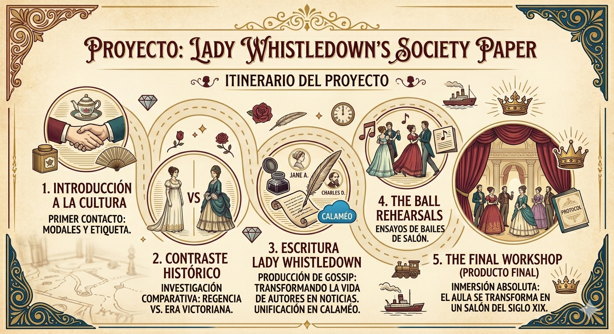
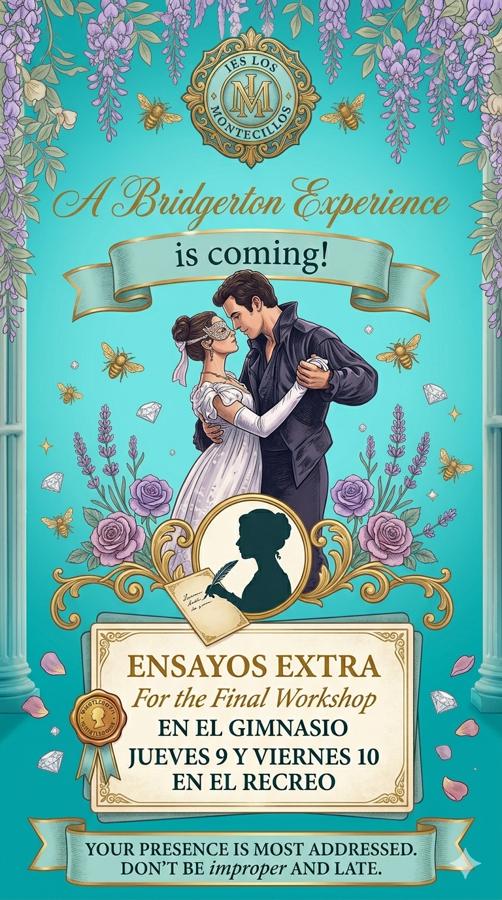

Guía Didáctica
Este apartado proporciona el marco pedagógico y técnico necesario para que cualquier docente pueda implementar con éxito la Situación de Aprendizaje Lady Whistledown's Society Paper.
Este recurso educativo ha sido diseñado para sumergir al alumnado de 2º ESO en la sociedad de la Regencia y la Era Victoriana. Realizaremos un viaje en el tiempo para explorar el sofisticado mundo de la Inglaterra del siglo XIX, convirtiendo a los estudiantes en expertos en historia, etiqueta y costumbres sociales.
Utilizamos el modelo de Aprendizaje Basado en Proyectos y la estética de la cultura popular actual (como la serie Bridgerton) como "gancho" para eliminar barreras de timidez y aumentar la implicación en el área de Inglés.
|
Itinerario del Proyecto El proyecto se estructura en cinco retos clave que puedes seguir visualmente en nuestro Roadmap: 1. Introducción a la cultura: Primer contacto con los modales y la etiqueta. 2. Contraste histórico: Investigación comparativa entre la Regencia y la Era Victoriana. 3. Escritura Lady Whistledown: Tarea de producción donde transforman la vida de autores como Jane Austen o Charles Dickens en "gossip" de sociedad, usando Canva. Posteriormente, todo el material se unifica en Calaméo para su difusión. 4. The Ball Rehearsals: Sesiones prácticas de ensayos de bailes de salón. 5. The Final Workshop (Producto Final): El punto álgido. Una inmersión absoluta donde el aula se transforma en un salón del siglo XIX. |

Objetivos y Evaluación
Objetivos y Evaluación
Al finalizar este proyecto, el alumnado será capaz de:
Interpretar información específica sobre contextos históricos y sociales complejos.
Producir textos multimodales de alta calidad que sirvan de apoyo a la ambientación histórica.
Demostrar, a través de una experiencia inmersiva, la adquisición de competencias orales, sociales y culturales en lengua inglesa.
⚠️ Nota Curricular: La relación detallada de cada tarea con sus criterios de evaluación específicos se encuentra disponible en la sección de "Evaluation" del menú lateral.
Orientaciones
Orientaciones para la Implementación
- Fomente el uso del inglés durante el Workshop final, tratando el error como una herramienta natural.
- Asegure que el alumnado comprenda las pautas de protección de datos antes de comenzar el proyecto.
- Recomiendo la coordinación con Plástica (para la decoración del salón) y Música (para la coreografía del baile, si no sois capaces de incorporarlo en vuestra aula de Inglés).
Os dejo este cartel que he usado para mis ensayos. Lo podéis modificar dando los prompts correctos en Gemini.

Docentes os invito a adaptar estos materiales a su contexto de aula, manteniendo siempre el espíritu de inmersión que hace que este proyecto sea una experiencia memorable para el alumnado, os aseguro que les va a encantar. ¡Que comience la temporada! 💎